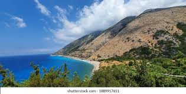
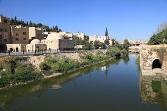
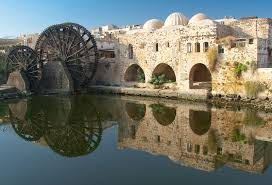
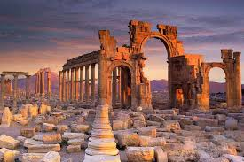

Explore the Other Beautiful Cities of Syria
Syria is home to many cities, each with its own unique history and significance. From the coastal city of Latakia to the ancient city of Homs, each place tells a story of Syria's rich culture, vibrant life, and resilient people. These cities offer a blend of modernity and historical significance, reflecting the diverse landscapes and cultures that have flourished in this region for thousands of years.
Latakia
Latakia is a major port city on the Mediterranean coast, known for its stunning beaches, natural beauty, and rich history. The city's origins trace back to ancient times, and it has been an important center for trade and maritime activities. Today, Latakia is one of Syria's most visited cities due to its scenic coastal views, vibrant resorts, and the perfect blend of ancient and modern attractions. The city's relaxed atmosphere makes it a popular destination for tourists and locals alike, offering a variety of cultural landmarks, including the ancient Latakia Castle, and a bustling seafront full of cafes and restaurants that serve fresh seafood.
Homs
Homs is a city rich in both ancient and modern history, often referred to as the "City of the Sun." Known for its historical significance, Homs has been a cultural and economic hub for centuries. The city features remarkable ancient ruins, including the famous Temple of Bel, as well as modern infrastructure and vibrant marketplaces. Homs also holds a strategic position as a center for trade and industry in Syria. The Al-Nuri Mosque, with its impressive architecture, is one of the city's most important landmarks. Despite the challenges faced in recent years, Homs has remained a symbol of resilience and strength for the Syrian people, showcasing their rich cultural heritage and perseverance in the face of adversity.
Hama
Hama is one of Syria's oldest cities, famous for its ancient waterwheels known as "Norias." These waterwheels are a testament to the city's ingenious engineering and were once used to raise water for irrigation and other purposes. The city's historical charm lies in its well-preserved medieval architecture, with numerous mosques, castles, and ancient fountains scattered throughout. The Orontes River runs through Hama, offering scenic views and adding to the city's tranquil atmosphere. Hama is a blend of the old and the new, with a rich heritage that is celebrated by both locals and visitors. It is a city where ancient traditions and modern life coexist harmoniously.
Palmyra
Palmyra, often called the "Bride of the Desert," is one of Syria's most famous archaeological sites and one of the most important ancient cities of the Roman Empire. Known for its monumental ruins, Palmyra was a thriving metropolis in the 1st and 2nd centuries AD, and it became a UNESCO World Heritage site in 1980. The ruins include grand temples, colonnaded streets, and majestic archways that showcase the city’s impressive architectural feats. Although Palmyra faced significant damage during recent conflicts, efforts are underway to preserve and restore the site. The city continues to be a symbol of Syria’s ancient history, representing the cultural and historical richness of the region.
Deir ez-Zor

Deir ez-Zor is a historic city in eastern Syria, known for its proximity to the Euphrates River. The city has long been a center of agriculture and trade, with its fertile lands supporting a variety of crops and livestock. Historically, Deir ez-Zor has served as a crossroads between the Arab world and Turkey, playing a key role in Syria’s economic and cultural development. The city is also home to several important cultural sites, including mosques and monuments from various periods of Syria’s rich history. Deir ez-Zor has faced challenges in recent years but remains a vital part of Syria's heritage and continues to be a symbol of resilience for its people.
Notable Facts about Syrian Cities
| City | Significance |
|---|---|
| Latakia | Coastal city with ancient ports and scenic beaches |
| Homs | Known for its rich cultural and historical heritage |
| Hama | Famous for its ancient waterwheels (Norias) |
| Palmyra | Ancient UNESCO World Heritage site with monumental ruins |
| Deir ez-Zor | Culturally important city with modern relevance |